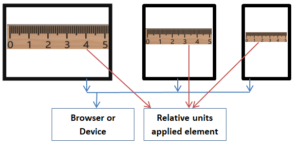
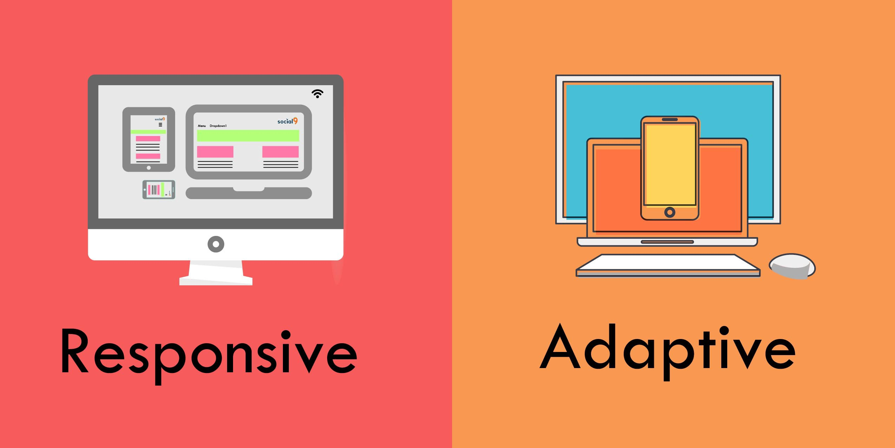

Web Design
- Conventionality
- Navigability
- Responsive Design
By Team Brendan:
Aliki,
Nikos,
Patrick
Conventionality
conventions vs originality
in
web and
layout designs
👇 Some Conventions are 👇
-
Placing the main navigation 🔍
at the top (or left side) of a page. -
Placing a logo at the top left ↩️
(or center) of a page. -
Making the logo clickable 🏠
so it always brings a visitor back
to the homepage .
👇 And More Conventions 👇
- Having links and buttons that change color / appearance when you hover over them.
-
🛒 Using a shopping cart icon 🛒
on an e-commerce site. The icon also has a number badge signifying the number of items in the cart. -
Ensuring image sliders have buttons 🔄
users can click to manually rotate slides.
👀 A Demo on HubSpot.com
- Logo
- Icons
- Nav Bar
- Hotpots and Button
- Showcase Image
- Side Panel
- Main Section
Conventionality,
to conclude
🎉 Be creative in web and layout
design
but stick to the conventions.
Users will have a better experience
because they can navigate intuitively
on a website they are familiar with. 🎉
Navigability
Few tips for optimizing navigation:
{kind=link}

Responsive Design
Websites are designed so that they can be resizable to different screen sizes, in order to achieve best browsing experience, ways achieving that:
- Flexible design, adjustable size depending on the screen
- Images are inside relative units
- Fluid grid concept, elements should be sized by percentages and not by pixels or points.
Media Queries and Adaptive Web Design
Media Queries change the style of the Website to different device screen sizes.
Adaptive Web Design is done by using multiple fixed layout sizes for different devices.